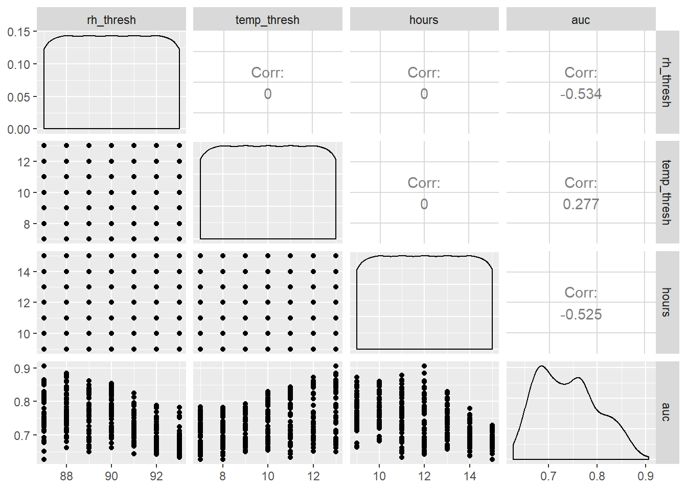
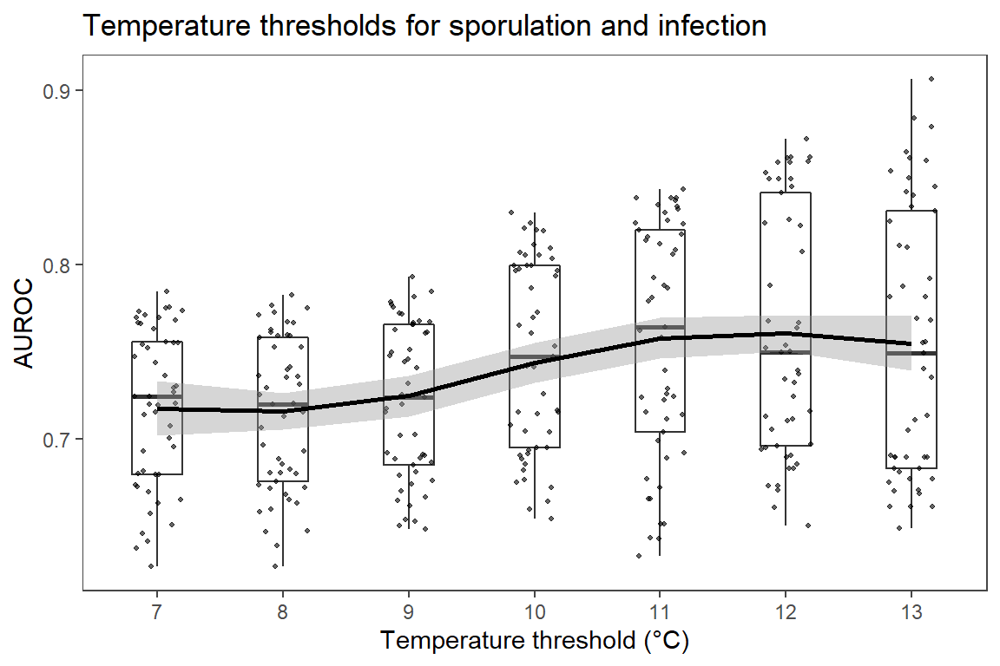
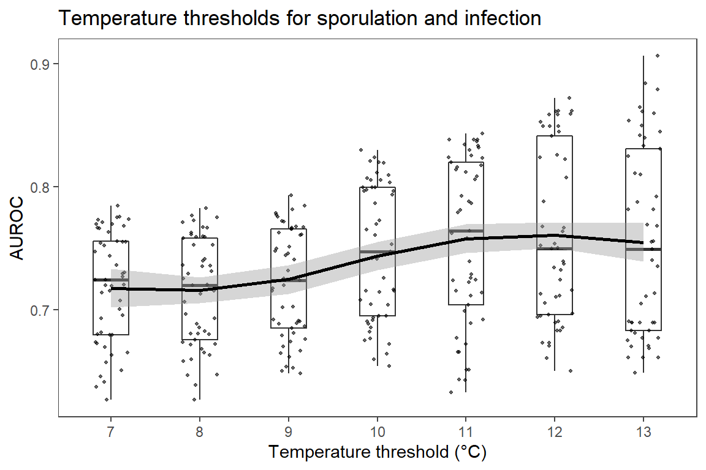
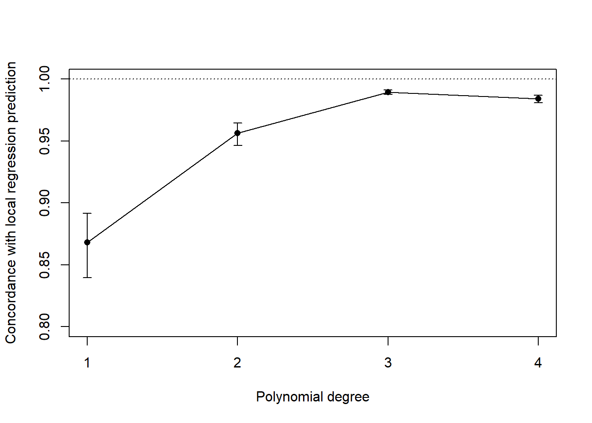
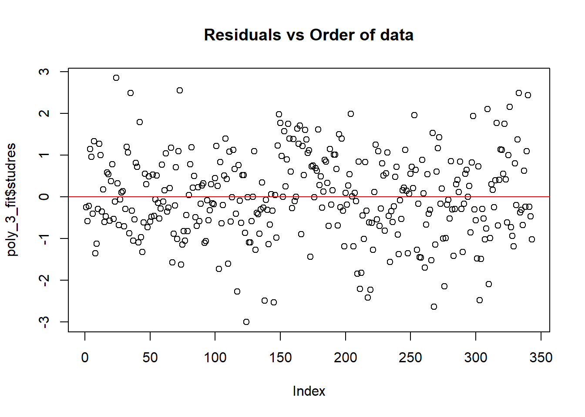
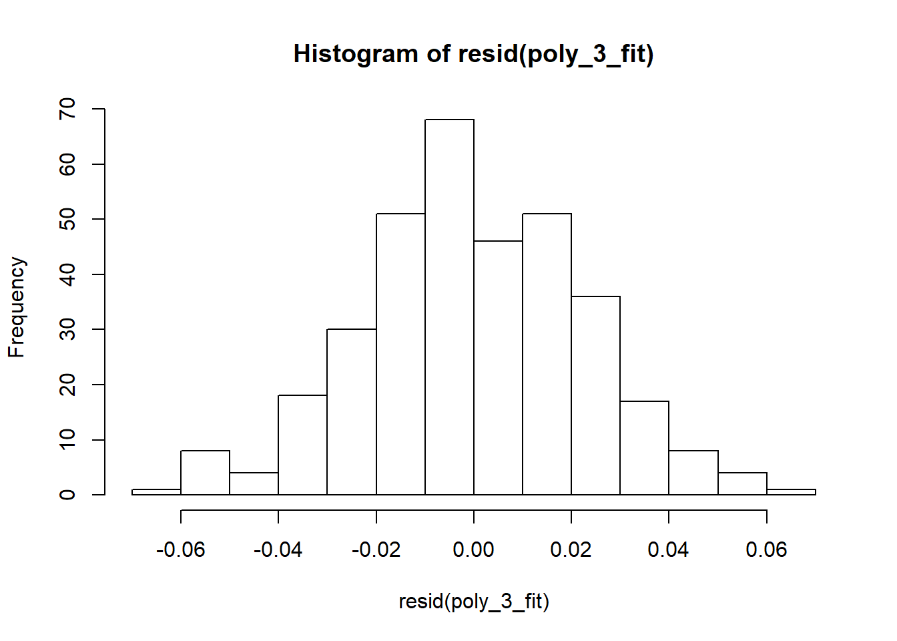
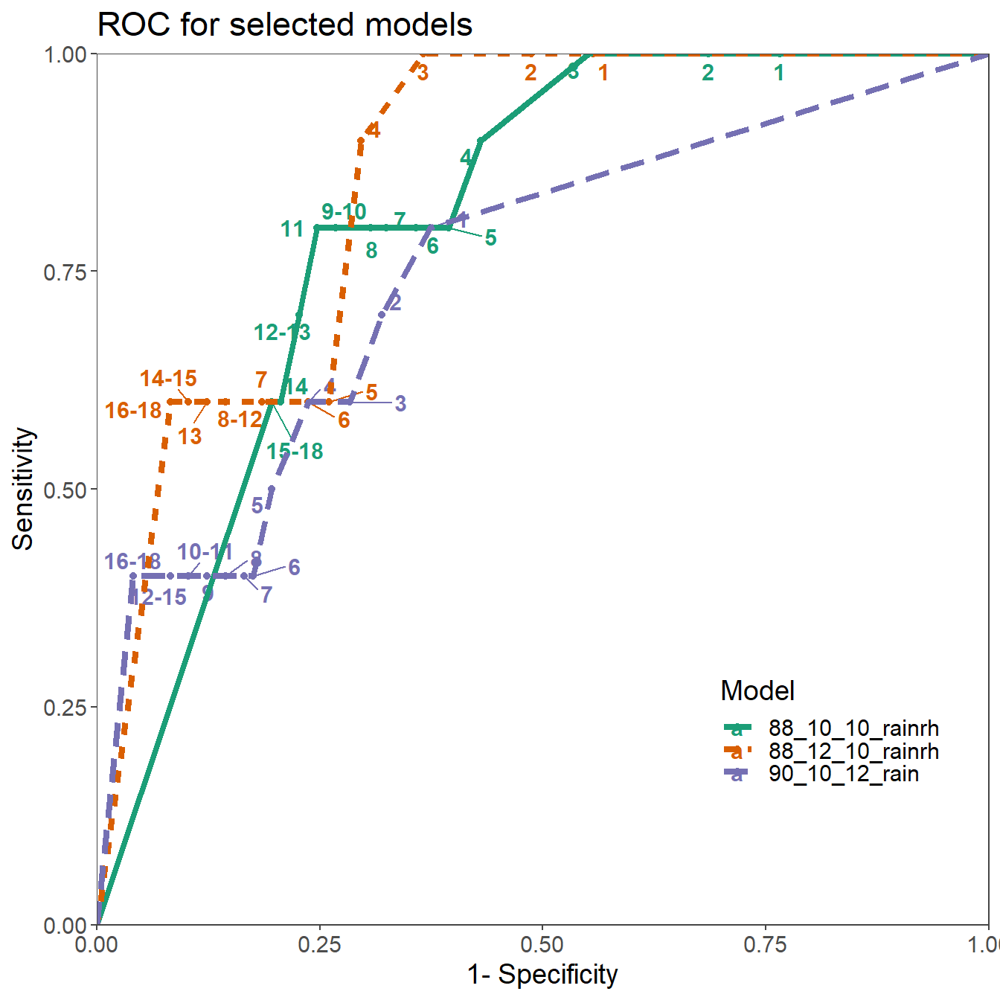

Evaluation of Irish Rules model
Parameter evaluation
Libraries
Packages needed for the analysis are loaded. If the libraries do not exist locally, they will be downloaded.
list.of.packages <-
c(
"tidyverse",
"readxl",
"data.table",
"knitr",
"zoo",
"imputeTS",
"ggthemes",
"rcompanion",
"mgsub",
"R.utils",
"here",
"stringr",
"pander",
"egg",
"rsm",
"ggrepel",
"cowplot"
)
new.packages <-
list.of.packages[!(list.of.packages %in% installed.packages()[, "Package"])]
#Download packages that are not already present in the library
if (length(new.packages))install.packages(new.packages, force = TRUE, dependencies = TRUE)
if ("gt" %in% installed.packages() == FALSE)
remotes::install_github("rstudio/gt")
list.of.packages <- c(list.of.packages, "gt")
packages_load <-
lapply(list.of.packages, require, character.only = TRUE)
#Print warning if there is a problem with installing/loading some of packages
if (any(as.numeric(packages_load) == 0)) {
warning(paste("Package/s", paste(list.of.packages[packages_load != TRUE]), "not loaded!"))
} else {
print("All packages were successfully loaded.")
}## [1] "All packages were successfully loaded."rm(list.of.packages, new.packages, packages_load)Leaf wetness estimation
Differences between pairs of models with same parameters, differing only in leaf wetness estimation. We shall consult visual aids to assess if distribution of differences follows normal distribution.
# load the data
load( file = here::here("data", "op_2007_16", "data.RData"))
t_data <-
data %>%
group_by(rh_thresh, temp_thresh, hours) %>%
unite(var, rh_thresh, temp_thresh, hours) %>%
spread(key = lw_rh, value = auc) %>%
mutate(difference = rain - rainrh)
ggplot(t_data, aes(x = difference)) +
geom_density(fill = "royalblue",
alpha = 0.5,
color = NA) +
geom_point(aes(y = 0),
alpha = 0.5) +
geom_histogram(binwidth = 0.001) +
theme_article()
Compute summary statistics by groups.
group_by(data, lw_rh) %>%
summarise(
count = n(),
median = median(auc, na.rm = TRUE),
IQR = IQR(auc, na.rm = TRUE)
) %>% gt()| lw_rh | count | median | IQR |
|---|---|---|---|
| rain | 343 | 0.6953608 | 0.06018041 |
| rainrh | 343 | 0.7345361 | 0.09027062 |
shapiro.test(t_data$difference)##
## Shapiro-Wilk normality test
##
## data: t_data$difference
## W = 0.8718, p-value = 2.877e-16The p-value < 0.05 implying that the distribution of the data is significantly different from normal distribution. Use paired-sample Wilcoxon test to determine if median AUROC with r as lw estimator is as good as the median auc with both r and rh as estimators.
w.test <- with(t_data,
wilcox.test(
rain,
rainrh,
paired = TRUE,
exact = F,
alternative = "less"
))
w.test##
## Wilcoxon signed rank test with continuity correction
##
## data: rain and rainrh
## V = 11211, p-value < 2.2e-16
## alternative hypothesis: true location shift is less than 0Wilcoxon signed rank test showed that median AUROC is greater when using both rain >0.1 mm and RH>90% instead only rain >0.1 mm and as leaf wetness indicators with p < 0.001. Model outputs with rain as single predictor are removed from further analysis.
plot <-
data %>%
mutate(Leaf_Wetness = factor(ifelse(
lw_rh == "rainrh", "rain and rh", "only rain"
))) %>%
ggplot(aes(
x = factor(lw_rh),
y = auc,
group = Leaf_Wetness
)) +
geom_boxplot(aes(colour = Leaf_Wetness), width = 0.4) +
# geom_label(aes_string(x=1.5, y=height, label=paste("p =",w.test$p.value)), label.size =0.02 )+
scale_color_discrete(name = "Leaf Wetness",
labels = c("Rain>0.01", "Rain>0.01 & RH>=90%")) +
scale_x_discrete(breaks = c(0, 90),
labels = c("rain", "rh and rain")) +
xlab("Infection period switch") +
ylab("AUROC") +
theme_article() +
coord_equal(10 / 1)
plot+ggsave(here::here("data", "op_2007_16","results","LWswithc.png"), width = 11, height = 11, units = "cm")
#Remove the data containg only rain as estimator
# data <- subset(data, lw_rh == "rainrh")
# data$lw_rh <- NULLT, RH and Sporulation duration
Initial exploration
Scatter plot matrix shows some relationships between y and other variables.
GGally::ggpairs(data,
lower = list(continuous = "points"),
upper = list(continuous = "cor"))## Registered S3 method overwritten by 'GGally':
## method from
## +.gg ggplot2## `stat_bin()` using `bins = 30`. Pick better value with `binwidth`.
## `stat_bin()` using `bins = 30`. Pick better value with `binwidth`.
## `stat_bin()` using `bins = 30`. Pick better value with `binwidth`.
## `stat_bin()` using `bins = 30`. Pick better value with `binwidth`.
Increasing temperature threshold had positive, while reducing rh and duration of sporulation threshold had negative correlation with AUROC.
Take initial look at descriptive statistics and trend of AUROC response as a factor of each variable investigated.
p1 <-
data[order(data$hours), ] %>%
ggplot(., aes(factor(hours), auc)) +
geom_boxplot(width = 0.4) +
geom_jitter(
position = position_jitter(width = 0.2),
colour = "black",
alpha = 0.6,
size = 0.7
) +
ggtitle("Durations of sporulation period") +
geom_smooth(method = "loess",
se = T,
color = "red",
aes(group = 1)) +
xlab("Sporulation period (hours)") +
ylab("AUROC") +
theme_article()
p2 <-
ggplot(data, aes(factor(rh_thresh), auc)) +
geom_boxplot(width = 0.4) +
geom_jitter(
position = position_jitter(width = 0.2),
colour = "black",
alpha = 0.6,
size = 0.7
) +
ggtitle("RH thresholds for sporulation and infection") +
geom_smooth(method = "loess",
se = T,
color = "blue",
aes(group = 1)) +
ylab("AUROC") +
xlab("RH threshold (%)") +
theme_article()
p3 <-
ggplot(data, aes(factor(temp_thresh), auc)) +
geom_boxplot(width = 0.4) +
geom_jitter(
position = position_jitter(width = 0.2),
colour = "black",
alpha = 0.6,
size = 0.7
) +
ggtitle("Temperature thresholds for sporulation and infection") +
geom_smooth(
method = "loess",
se = T,
color = "black",
aes(group = 1),
show.legend = T
) +
xlab("Temperature threshold (°C)") +
ylab("AUROC") +
theme_article()
grDevices::png(filename = here::here("data", "op_2007_16","results","init_vis.png"),
width = 400, height = 800,bg = "white", res = NA)
egg::ggarrange(p1,p2,p3, ncol = 1)
dev.off()## png
## 2p1;p2;p3
 

Model fitting
lapply(data[, 1:3], function(x)
sort(unique(x)))## $rh_thresh
## [1] 87 88 89 90 91 92 93
##
## $temp_thresh
## [1] 7 8 9 10 11 12 13
##
## $hours
## [1] 9 10 11 12 13 14 15Create coded data set. Seven levels of each variable are used.
cd_data <- coded.data(data, Tt ~ (temp_thresh - 10),
RHt ~ (rh_thresh - 90),
SDt ~ (hours - 12)
)
str(cd_data)## Classes 'coded.data' and 'data.frame': 686 obs. of 5 variables:
## $ RHt : num -3 -3 -3 -3 -3 -3 -3 -3 -3 -3 ...
## $ Tt : num 0 0 0 0 0 0 0 0 0 0 ...
## $ SDt : num -2 -2 -1 -1 0 0 1 1 2 2 ...
## $ lw_rh: chr "rain" "rainrh" "rain" "rainrh" ...
## $ auc : num 0.806 0.797 0.768 0.8 0.713 ...
## - attr(*, "codings")=List of 3
## ..$ Tt :Class 'formula' language Tt ~ (temp_thresh - 10)
## .. .. ..- attr(*, ".Environment")=<environment: R_GlobalEnv>
## ..$ RHt:Class 'formula' language RHt ~ (rh_thresh - 90)
## .. .. ..- attr(*, ".Environment")=<environment: R_GlobalEnv>
## ..$ SDt:Class 'formula' language SDt ~ (hours - 12)
## .. .. ..- attr(*, ".Environment")=<environment: R_GlobalEnv>
## - attr(*, "rsdes")=List of 2
## ..$ primary: chr "Tt" "RHt" "SDt"
## ..$ call : language coded.data(data = data, Tt ~ (temp_thresh - 10), RHt ~ (rh_thresh - 90), SDt ~ (hours - 12))head(cd_data) %>% kable()| RHt | Tt | SDt | lw_rh | auc |
|---|---|---|---|---|
| -3 | 0 | -2 | rain | 0.8064433 |
| -3 | 0 | -2 | rainrh | 0.7966495 |
| -3 | 0 | -1 | rain | 0.7680412 |
| -3 | 0 | -1 | rainrh | 0.7997423 |
| -3 | 0 | 0 | rain | 0.7128866 |
| -3 | 0 | 0 | rainrh | 0.7997423 |
We may use non-parametric local regression (loess) to obtain predicted values for the 4-dimensnional response surface, using RHt, SDt, and Tt, and all 3- and 2-way interations as the predictors. We can then compare the extent of agreement between polynomial regressions and the loess regression to aid in choosing the degree of the polynomial regression, by using the concordance correlation coefficient (see Lin, 1989, (A concordance correlation coefficient to evaluate reproducibility, Biometrics 45:255–268).
lo_fit1 <- loess(auc ~ RHt * SDt * Tt, data = cd_data)
lo_pred <- predict(lo_fit1)Fit models of first to fourth order, and evaluate fits.
poly_1_fit <- lm(auc ~ poly(RHt, SDt, Tt, degree = 1), data = cd_data)
poly_2_fit <- lm(auc ~ poly(RHt, SDt, Tt, degree = 2), data = cd_data)
poly_3_fit <- lm(auc ~ poly(RHt, SDt, Tt, degree = 3), data = cd_data)
poly_4_fit <- lm(auc ~ poly(RHt, SDt, Tt, degree = 4), data = cd_data)
rcompanion::compareLM(poly_1_fit,poly_2_fit,poly_3_fit,poly_4_fit)[[2]] %>%
add_column( Order = 1:4, .before = 1) %>%
gt() | Order | Rank | Df.res | AIC | AICc | BIC | R.squared | Adj.R.sq | p.value | Shapiro.W | Shapiro.p |
|---|---|---|---|---|---|---|---|---|---|---|
| 1 | 4 | 682 | -2472 | -2472 | -2449 | 0.5443 | 0.5423 | 6.469e-116 | 0.9969 | 0.2010 |
| 2 | 10 | 676 | -2683 | -2682 | -2633 | 0.6707 | 0.6663 | 1.423e-156 | 0.9963 | 0.1034 |
| 3 | 20 | 666 | -2771 | -2770 | -2676 | 0.7188 | 0.7107 | 5.516e-169 | 0.9987 | 0.8944 |
| 4 | 35 | 651 | -2784 | -2780 | -2621 | 0.7358 | 0.7220 | 5.768e-164 | 0.9973 | 0.3237 |
Cubic model seems to be the best fit for our purpose. We want to get the best possible fit to the data, to understand underlying relationships between variable thresholds of our model. Hence, our priority is increase in explanatory power, for which our main guide is adjusted R2, while the distriburion of residuals is still fulfilling the assumption of normality. Model of 4th order seems to provide very little gain in terms of fit Adj. R2 comparing to 3rd order, and most importantly is not overfitting indicated by Wilks-Shapiro test for model of 4th order. Information crterions are indication high values for all fits because of structure of data set, and this information is disregarded because the model is used for interpretation of the data.
Looking at the concordance between local regression (loess) and polynomial models, we have:
library(DescTools)##
## Attaching package: 'DescTools'## The following object is masked from 'package:data.table':
##
## %like%pred_cd_data <-
data.frame(
lo_pred,
predict(poly_1_fit),
predict(poly_2_fit),
predict(poly_3_fit),
predict(poly_4_fit)
)
c1 <- CCC(pred_cd_data$lo_pred, pred_cd_data$predict.poly_1_fit.)$rho
c2 <- CCC(pred_cd_data$lo_pred, pred_cd_data$predict.poly_2_fit.)$rho
c3 <- CCC(pred_cd_data$lo_pred, pred_cd_data$predict.poly_3_fit.)$rho
c4 <- CCC(pred_cd_data$lo_pred, pred_cd_data$predict.poly_4_fit.)$rho
plot(c(c1$est,c2$est,c3$est,c4$est), ylim = c(.8,1), pch = 16, type = "o",
ylab = "Concordance with local regression prediction",
xlab = "Polynomial degree", xaxt = "n")
axis(1, 1:4, 1:4); abline(h = 1, lty = 3)
arrows(1:4, c(c1$lwr.ci,c2$lwr.ci,c3$lwr.ci,c4$lwr.ci),
1:4, c(c1$upr.ci,c2$upr.ci,c3$upr.ci,c4$upr.ci),
code = 3, length = .05, angle = 90)
This reinforces the choice of the polynomial model of degree 3, which yields predictions that agree the most with the local, non-parametric regression, and hence adequately reproduces the behaviour of the response surface.
library(pander)
panderOptions('round', 2)
panderOptions('keep.trailing.zeros', TRUE)
pander(poly_3_fit,add.significance.stars = T)| Estimate | Std. Error | t value | Pr(>|t|) | ||
|---|---|---|---|---|---|
| (Intercept) | 0.72 | 0.00 | 600.59 | 0.00 | * * * |
| poly(RHt, SDt, Tt, degree = 3)1.0.0 | -0.78 | 0.03 | -24.54 | 0.00 | * * * |
| poly(RHt, SDt, Tt, degree = 3)2.0.0 | -0.23 | 0.03 | -7.33 | 0.00 | * * * |
| poly(RHt, SDt, Tt, degree = 3)3.0.0 | 0.14 | 0.03 | 4.44 | 0.00 | * * * |
| poly(RHt, SDt, Tt, degree = 3)0.1.0 | -0.69 | 0.03 | -21.97 | 0.00 | * * * |
| poly(RHt, SDt, Tt, degree = 3)1.1.0 | 8.86 | 0.83 | 10.71 | 0.00 | * * * |
| poly(RHt, SDt, Tt, degree = 3)2.1.0 | 3.00 | 0.83 | 3.62 | 0.00 | * * * |
| poly(RHt, SDt, Tt, degree = 3)0.2.0 | -0.03 | 0.03 | -0.90 | 0.37 | |
| poly(RHt, SDt, Tt, degree = 3)1.2.0 | 3.38 | 0.83 | 4.08 | 0.00 | * * * |
| poly(RHt, SDt, Tt, degree = 3)0.3.0 | 0.05 | 0.03 | 1.68 | 0.09 | |
| poly(RHt, SDt, Tt, degree = 3)0.0.1 | 0.45 | 0.03 | 14.28 | 0.00 | * * * |
| poly(RHt, SDt, Tt, degree = 3)1.0.1 | -6.46 | 0.83 | -7.80 | 0.00 | * * * |
| poly(RHt, SDt, Tt, degree = 3)2.0.1 | 3.43 | 0.83 | 4.14 | 0.00 | * * * |
| poly(RHt, SDt, Tt, degree = 3)0.1.1 | -6.50 | 0.83 | -7.85 | 0.00 | * * * |
| poly(RHt, SDt, Tt, degree = 3)1.1.1 | 78.62 | 21.68 | 3.63 | 0.00 | * * * |
| poly(RHt, SDt, Tt, degree = 3)0.2.1 | -0.23 | 0.83 | -0.28 | 0.78 | |
| poly(RHt, SDt, Tt, degree = 3)0.0.2 | -0.09 | 0.03 | -2.76 | 0.01 | * * |
| poly(RHt, SDt, Tt, degree = 3)1.0.2 | 0.75 | 0.83 | 0.90 | 0.37 | |
| poly(RHt, SDt, Tt, degree = 3)0.1.2 | -1.59 | 0.83 | -1.92 | 0.06 | |
| poly(RHt, SDt, Tt, degree = 3)0.0.3 | -0.16 | 0.03 | -5.16 | 0.00 | * * * |
Evaluate model fit with diagnostic plot.
poly_3_fit$studres <- rstudent(poly_3_fit)
plot(poly_3_fit$studres, main="Residuals vs Order of data")
abline(h = 0, col = "red")
hist(resid(poly_3_fit)) #distriburion of residuals should be approximately normal
Assumptions of normality of residuals are fulfilled.
Extract the model formula. The code has been borrowed from this StackOverflow thread
processPolyNames = function(coef){
members = strsplit(mgsub::mgsub(coef,c("poly\\(",", degre.*"),c("","")),", ")[[1]]
degree = as.numeric(strsplit(strsplit(coef,")")[[1]][2],"\\.")[[1]])
coef_out = ""
for(d in seq_along(degree)){
if(degree[d] == 0) next
if(degree[d] == 1){
if(coef_out == ""){
coef_out = members[d]
} else {
coef_out = paste0(coef_out,"*",members[d])
}
} else {
if(coef_out == ""){
coef_out = paste0(members[d],"^",degree[d],"^")
} else {
coef_out = paste0(coef_out,"*",members[d],"^",degree[d],"^")
}
}
}
return(coef_out)
}
coefs = summary(poly_3_fit)$coef[,1]
prettyNames = lapply(names(coefs)[-1],processPolyNames)
prettyModel = ""
for(i in seq_along(coefs)){
if(i == 1){
prettyModel = paste0(prettyModel,round(coefs[i],2))
} else {
prettyModel = paste0(prettyModel,ifelse(coefs[i] >= 0," + "," "),round(coefs[i],2),"*",prettyNames[[i-1]])
}
}
prettyModel <- paste("AUROC =", gsub("-", "- ", prettyModel))
cat(prettyModel);rm(processPolyNames,coefs,prettyNames)## AUROC = 0.72 - 0.78*RHt - 0.23*RHt^2^ + 0.14*RHt^3^ - 0.69*SDt + 8.86*RHt*SDt + 3*RHt^2^*SDt - 0.03*SDt^2^ + 3.38*RHt*SDt^2^ + 0.05*SDt^3^ + 0.45*Tt - 6.46*RHt*Tt + 3.43*RHt^2^*Tt - 6.5*SDt*Tt + 78.62*RHt*SDt*Tt - 0.23*SDt^2^*Tt - 0.09*Tt^2^ + 0.75*RHt*Tt^2^ - 1.59*SDt*Tt^2^ - 0.16*Tt^3^AUROC = 0.72 - 0.78RHt - 0.23RHt2 + 0.14RHt3 - 0.69SDt + 8.86RHtSDt + 3RHt2SDt - 0.03SDt2 + 3.38RHtSDt2 + 0.05SDt3 + 0.45Tt - 6.46RHtTt + 3.43RHt2Tt - 6.5SDtTt + 78.62RHtSDtTt - 0.23SDt2Tt - 0.09Tt2 + 0.75RHtTt2 - 1.59SDtTt2 - 0.16Tt3
Surface plot of model fits
Visualise fitted response surface.
z_min <- min(data$auc) - c(min(data$auc) * 0.02)
z_max <- max(data$auc) + c(max(data$auc) * 0.02)
# use a viridis palette for usability
library(viridis)
color_var <- plasma(256)
par(mar = c(1.5, 4.5, 3.5, 1.5),
mfrow = c(3, 3),
cex = 0.5)
par_cut <- data.frame(
Tt = c(rep(0, 6), -3, 0,+3),
RHt = c(rep(0, 3), -3, 0,+3, rep(0, 3)),
SDt = c(-3, 0,+3, rep(0, 6))
)
plot_ls <- list()
for (i in seq(nrow(par_cut))) {
persp(poly_3_fit,
if (i <= 3) {
~ RHt + Tt
} else if (i %in% 4:6) {
~ SDt + Tt
} else if (i >= 7) {
~ SDt + RHt
}
,
at = data.frame(par_cut[i,]),
zlab = "\nAUROC",
xlab = if (i <= 3) {
c("RHt (%)","Tt (°C)")
} else if (i %in% 4:6) {
c("SDt (hours)", "Tt (°C)")
} else if (i >= 7) {
c("SDt (hours)", "RHt (%)")
},
col = color_var,
zlim = c(z_min, z_max),
theta = 37,
phi = 10,
border = "grey15",
lwd = 0.5,
cex.main = 1.8,
cex.axis = 1.06,
cex.lab = 1.8,
main = paste0("\n",letters[i],") ", "Response at ",
"Tt = ", par_cut[i,1] + 10,"°C;",
"\n",
"RHt = ", par_cut[i,2] + 90, "%; ",
"SDt = ", par_cut[i,3] +12, " hours."
)
)
}
Plots show relationship between variation in parameters of two variables with third variable fixed at three levels and response as AUROC. 3D surface plots indicate that reduced sporulation duration and relative humidity threshold improves accuracy of the model; while model versions with increased teperature threshold have better diagnostic performance.
Another way to present this data is with countour plots. We will plot contour plots corresponding to the above 3D surfaces
par(
mar = c(3, 4, 4, 2),
mfrow = c(3, 1),
cex.main = 1.2,
cex.axis = 1.06,
cex.lab = 1.1)
# c(5, 4, 4, 2)
contour(poly_3_fit, ~ Tt + RHt, image=TRUE, at = data.frame(Tt = 0, RHt = 0, SDt = -3 ))
# contour(poly_3_fit, ~ Tt + RHt, image=TRUE, at = data.frame(Tt = 0, RHt = 0, SDt = 0))
# contour(poly_3_fit, ~ Tt + RHt, image=TRUE, at = data.frame(Tt = 0, RHt = 0, SDt = +3))
contour(poly_3_fit, ~ Tt + SDt, image=TRUE, at = data.frame(Tt = 0, RHt = -3, SDt = 0 ))
# contour(poly_3_fit, ~ Tt + SDt, image=TRUE, at = data.frame(Tt = 0, RHt = 0, SDt = 0 ))
# contour(poly_3_fit, ~ Tt + SDt, image=TRUE, at = data.frame(Tt = 0, RHt = 3, SDt = 0 ))
# contour(poly_3_fit, ~ SDt + RHt, image=TRUE, at = data.frame(Tt = -3, RHt = 0, SDt = 0 ))
# contour(poly_3_fit, ~ SDt + RHt, image=TRUE, at = data.frame(Tt = 0, RHt = 0, SDt = 0 ))
contour(poly_3_fit, ~ SDt + RHt, image=TRUE, at = data.frame(Tt = 3, RHt = 0, SDt = 0 ))
Further investigation
Based on the sensitivity analysis followig model parametrisations were compared to the original parameters of Irish Rules and further analised:
# fig.width=5, fig.height=5,
# par(
# mfrow = c(1, 4)
# )
#Load function and the data
load( file = here::here("data", "op_2007_16", "ROC_data.RData"))
load( file = here::here("data", "op_2007_16", "AUROC_data.RData"))
load( file = here::here("data", "op_2007_16", "PlotROC.RData"))
mod_list <- list(
ROC_data[["88_10_12_rainrh"]],
ROC_data[["90_10_10_rainrh"]],
ROC_data[["90_12_12_rainrh"]],
ROC_data[["90_10_12_rain"]],
ROC_data[["88_12_10_rainrh"]],
ROC_data[["88_10_10_rainrh"]])
pl <- map2(mod_list, c(1:length(mod_list)), PlotROC)
plot_grid(pl[[1]],
pl[[2]],
pl[[3]],
pl[[4]],
pl[[5]],
pl[[6]],
ncol=3)
ls_roc <- lapply(mod_list[4:6], function(x) {
df <- x[rev(x$cut_point),]
#append rows for plotting
x <- rep(NA, ncol(df))
df <- rbind(x, df)
df[nrow(df) + 1,] <- NA
df$model <- unique(df$model[!is.na(df$model)])
df[1,c("sens","one_min_spec")] <- 0
df[nrow(df),c("sens","one_min_spec")] <- 1
#Condense labels for a single cutoff point
df <-
df %>%
group_by(one_min_spec, sens, model) %>%
summarise(cut_point = ifelse(all(is.na(cut_point)),
"",
range(cut_point, na.rm = TRUE) %>%
unique() %>%
paste(collapse = "-"))) %>%
ungroup()
return(df)
})
df <- bind_rows(ls_roc)
rename(df, Model = model) %>%
ggplot(aes(
one_min_spec,
sens,
group = Model,
color = Model,
label = cut_point
)) +
# geom_abline(intercept=0, slope = 1, color="black", linetype="dashed")+
geom_point() +
geom_text_repel(size = 2) +
geom_path(colour = "gray") +
geom_line() +
scale_y_continuous(limits = c(0, 1),
expand = c(0, 0),
name = "Sensitivity") +
scale_x_continuous(limits = c(0, 1),
expand = c(0, 0),
name = "1- Specificity") +
theme_minimal() +
theme(
text = element_text(size = 14),
panel.grid.major = element_blank(),
panel.grid.minor = element_blank(),
panel.border = element_rect(
linetype = "dashed",
size = 0.1,
fill = "NA",
colour = "black"
),
legend.position = c(.95, .15),
legend.justification = c("right", "bottom"),
# legend.box.just = "right",
legend.margin = margin(6, 6, 6, 6)
)+
ggtitle("ROC for selected models")
IR have failed to indicate any risk in 2 and the warning threshold of 12 hour was reached in only 4 years out of 10.